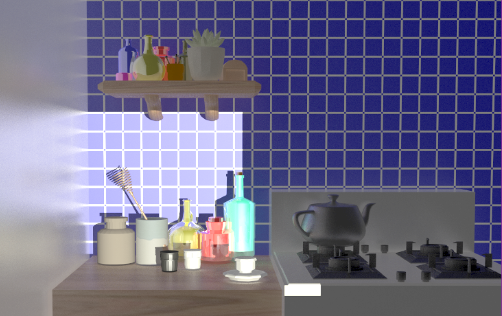

CS6620 - Ray Tracing for Graphics
Project 14 - Teapot Rendering Competition.
Results
Rendered in 1,062 minutes with eight threads, four bounces, and 150-210 samples. Some of the models were
free, royalty free models from CGTrader.

Machine Specs
Running Windows 10 on a Bootcamped MacBook Pro
| Processor |
Intel Core i7 2.50 GHz |
| RAM |
16GB 1600 MHz DDR3 |
| Graphics Card |
Intel Iris Pro 1536 MB |